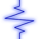
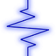

|  |
DSPatch
v.2.1
C++ Cross-Platform, Object-Oriented, Flow-Based Programming Library
|
|  |
DSPatch
v.2.1
C++ Cross-Platform, Object-Oriented, Flow-Based Programming Library
|
DSPatch, pronounced "dispatch", is a powerful C++ flow-based programming library that allows you to create and route (or "patch") high performance signal processing circuits. DSPatch is not limited to any particular type of circuit or signal, its generic object-oriented API allows you to create almost any process chain imaginable, from simple logic circuits to full-blown electronics simulation. DSPatch's simple framework makes development quick and easy, allowing you to hit the ground running on every project.
The two most important classes to consider are DspComponent and DspCircuit. In order to route data to and from DspComponents they can either be added to an DspCircuit, where they can be wired together (recommended), or they can be wired directly via public DspComponent methods. The DSPatch engine takes care of all data transfer between interconnected components, when data is ready for a component to process, a callback: "Process_()" is executed in that component. For a component to form part of the DSPatch framework, designers simply have to derive their component from the DspComponent base class, configure the component IO in the component constructor, and implement the virtual Process_() callback method.
For more detail on how DSPatch works, check out the DSPatch Design Specification.
The DSPatch library can be downloaded from the SourceForge project page. Download the project archive and extract the contents anywhere you like.
In the "DspDemo" folder (found in the DSPatch root directory) you will find a simple example project that uses the DSPatch library. This project has been written to assist developers in understanding the DSPatch API as well as to demonstrate how it could be used to build a real-time audio process chain. The quickest way to get this project compiled and running is to simply open the "DSPatch.sln" (Windows) or "DSPatch.xcodeproj" (Mac OS X) file (found in the root, and "Mac OS X\DSPatch" directories respectively) depending on the platform used -This solution contains both the DSPatch library and DspDemo project side-by-side as would be typical in developing a DSPatch application.
To get started all you need to do from your project is #include "DSPatch.h" from the "Include" folder (found in the "DSPatch" folder), and link to the DSPatch library (either by including all DSPatch source or by linking to a compiled library file). To speed things up you may want to copy, rename, and edit the DspDemo project from step 2 to get up and running faster.
In the "DspDemo\Source" folder (found in the "DspDemo" folder) you will find 2 source files: "DspGain.h" and "DspGain.cpp". These files make up a very simple DspComponent that adjusts the gain of the audio data passing through it. Much like the example project, the a fast way to create your own DspComponent could be to copy these files to another destination, rename them, and edit the contents to satisfy your component's required behavior.
Between the DspDemo project, the DspGain component template and the documentation found here, you should have enough resources to get started with DSPatch straight away. If you have any questions or wish to report a bug, feel free to email me at marcus@adaptaudio.com.
 1.8.0
1.8.0